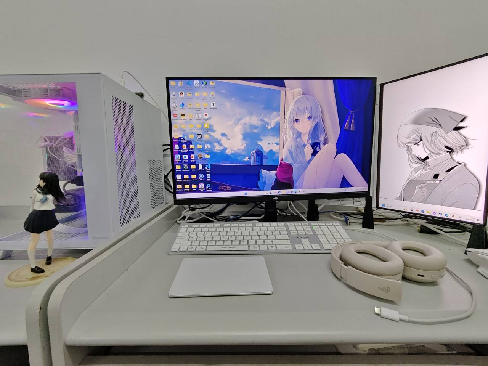

做了什么（其实没做什么，都是些杂事）
周一没休息好，晕晕沉沉，根本学不进去
周二周三折腾了两天的显示器，而且最近下午总是有事情，不是物理实验和赶作业就是实验课或者筹划买车和支架，而且因为这些时间没有写进日记里面所以丢失追踪了，而且好几天都不是很舒服，不舒服的时候还采取了错误的休息方式，爆睡的后果就是不但浪费了时间而且没有休息好，状态也很差。建议头痛的时候就来点999，在合适的时间午觉。周四提前进入休假状态，周五周六依旧玩只狼，周日搬家到实验室。
在宿舍确实呆不下去，一个人的时候很容易偷懒而且没有什么目的和动力，跟一群并不志同道合的人呆在一起只会徒增痛苦。他们每天的话题无非是些无聊的琐事，或刷到什么无聊的视频，或者因为一点微不足道的小成就小发现而鬼畜地大叫，说着没有任何交流意义的话题，总之让人恶心。
在图书馆也呆不下去过于死气沉沉了，而且没有大尺寸显示器我会死的。

想说的话：
搬到实验室真是太好了。
要正确休息，尽量全勤。正好后面基本都没有课程了，这周确实杂项有点多，勉为其难原谅一下自己是为了后面做准备。